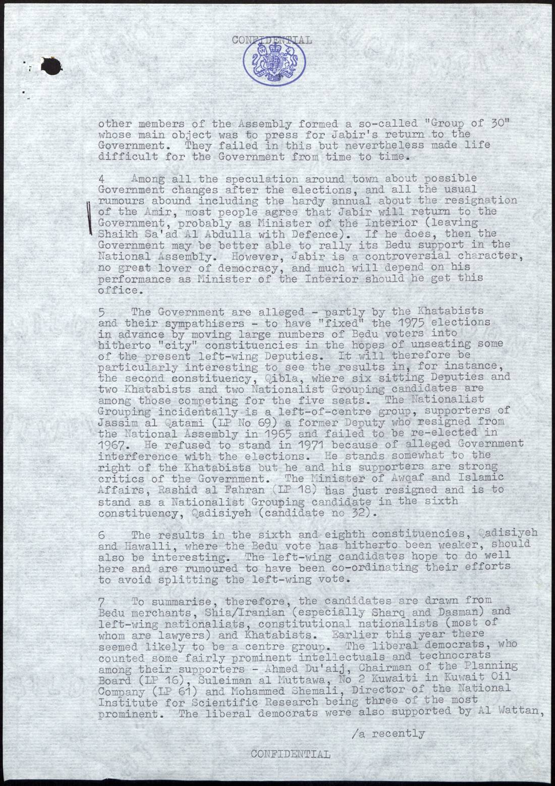
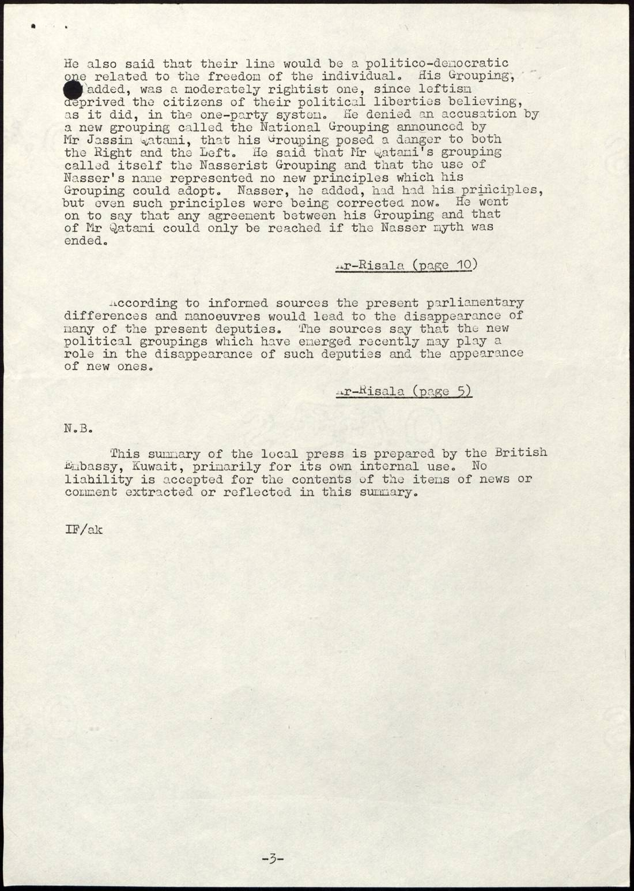
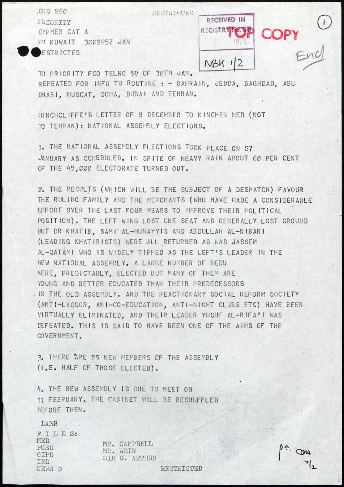

في ١٩٧٤ يعلن جاسم تجمعا جديدا هو التجمع الوطني، وتصف السفارة التجمع الوطني بأنهم أنصار جاسم القطامي. ترشح في الدائرة الثانية، القبلة، باسمه الكامل، وفاز بالمركز الثالث بـ٥٩٨ صوتا، وتذكر البرقية أنه مرشح على نطاق واسع لقيادة اليسار في المجلس الجديد.
أهميتها
اسمه الكامل، جاسم عبدالعزيز عبدالوهاب القطامي، يطابق نسبه في شجرة العائلة، والسجل يذكر عدد أصواته بالضبط.
من المقصود
اسمه الكامل في هذه الوثيقة، جاسم عبدالعزيز عبدالوهاب القطامي، يطابق نسبه في شجرة العائلة.
صور الصفحات

الأرشيف الوطني البريطاني، FCO 8/2189، ص ٤الأرشيف الوطني البريطاني، FCO 8/2189، ص ٧

الأرشيف الوطني البريطاني، FCO 8/2189، ص ٥١الأرشيف الوطني البريطاني، FCO 8/2441، ص ٤

الأرشيف الوطني البريطاني، FCO 8/2441، ص ٥٠
النص الأصلي
FCO 8/2189, page 4:
The Nationalist Grouping incidentally is a left-of-centre group, supporters of Jassim al Qatami (LP No 69) a former Deputy who resigned from the National Assembly in 1965 and failed to be re-elected in 1967. He refused to stand in 1971 because of alleged Government interference with the elections. He stands somewhat to the right of the Khatabists but he and his supporters are strong critics of the Government.
FCO 8/2189, page 7, candidates: … Jassem Abdul-Aziz Abdul-Wahhab al-Qatami (former deputy, Nationalist Grouping) …
FCO 8/2189, page 51, translated press summary, 1974:
He denied an accusation by a new grouping called the National Grouping announced by Mr Jassim Qatami, that his Grouping posed a danger to both the Right and the Left. … He went on to say that any agreement between his Grouping and that of Mr Qatami could only be reached if the Nasser myth was ended.
FCO 8/2441, page 4, results, Second Constituency (Qibla):
3. Jassem Abdul-Aziz Abdul-Wahab al-Qatami (Nationalist grouping, left but not a Khatibist), 598 votes.
FCO 8/2441, page 50, telegram:
The left wing lost one seat and generally lost ground but Dr Khatib, Sami al-Munayyis and Abdullah al-Nibari (leading Khatibists) were all returned as was Jassem al-Qatami who is widely tipped as the left's leader in the new National Assembly.
ملاحظات
في الصفحة ٥١ يشوّه نص الأرشيف الاسم إلى «Watani» و«Qatani»، والصورة تقرأ القطامي. والصفحة ٥١ نفسها ترجمة بريطانية لتقرير صحفي عربي.
أسماء أخرى
د. أحمد الخطيبسامي المنيسعبدالله النيباري
المصادر
الأرشيف الوطني البريطاني في لندن، رقمنه الأرشيف الرقمي للخليج العربي (agda.ae). الصور منشورة بإذن من الأرشيف الوطني البريطاني.
مرجع الأرشيف
FCO 8/2189 · Internal political situation in Kuwait
FCO 8/2441 · Elections in Kuwait, 27 January 1975
كيف كُتب هذا النص: نُسخ من قراءة الأرشيف لنص الصورة، وصُحح بالمقارنة مع الصورة حيث كانت القراءة مشوهة. وتشير … إلى نص محذوف. الترجمة العربية من Claude، يرجى مراجعتها.